匆匆遊覽完天地淵瀑布, 接著步行往離這裡不遠的新緣橋 (새연교 Saeyeon-gyo Bridge)和鳥島 (새섬 Saeseom Island, 或 Birds Island)遊覽。
新緣橋、鳥島
新緣橋位於濟州西歸浦港與鳥島之間, 是依照濟州島上的傳統木筏 Tewoo 為模型, 將其形象化後所建成的步橋。新緣橋於2009年9月28日開通, 是韓國最南端、最長的人行步橋。
新緣橋長169公尺, 是韓國國內最先使用單線鋼索的斜張橋。帆船形的主塔高45米, 裝設了 LED 照明設施, 在夜晚格外漂亮。遊客漫步於新緣橋上可以眺望西歸浦港、文島、虎島、西歸浦前海以及漢拿山等美景。
另外, 穿過新緣橋後便到達總面積達10萬2千多平方公尺的無人島―鳥島。鳥島上鋪設了長達1.2公里的木制甲板路、廣場、碎石路和森林散步道, 漫步其中, 可以觀賞到保護區裏的暖溫帶樹林。
離開天地淵瀑布, 沿出口前的馬路一直走。天空不時飄起毛毛雨, 十分惱人。
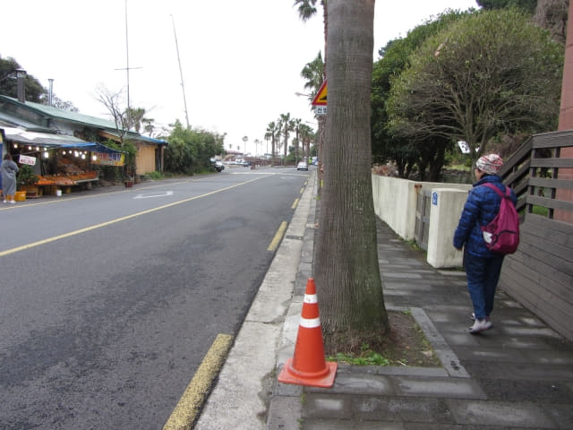
已經看到白色的新緣橋, 只是天色昏暗, 橋身也變得灰暗, 並不顯眼。
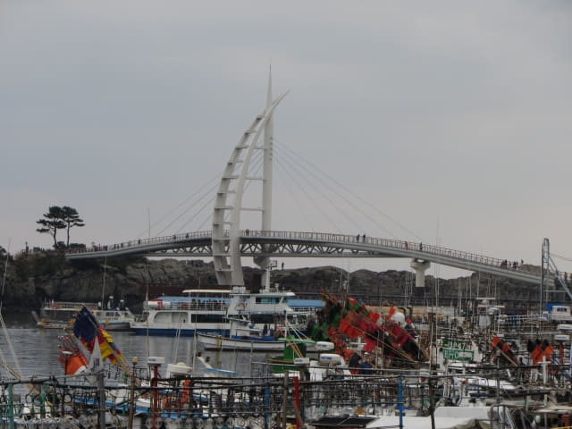
沿途的其中一條行車線都停靠了當地的旅遊車, 一直伸延至新緣橋, 比水蛇春還要長。
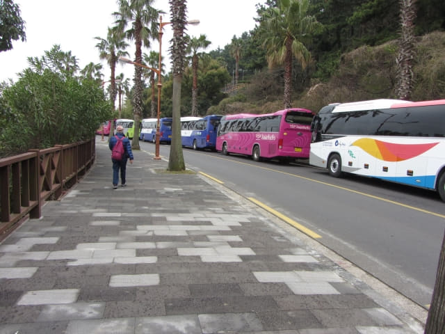
越來越接近新緣橋, 清楚看到橋的設計。
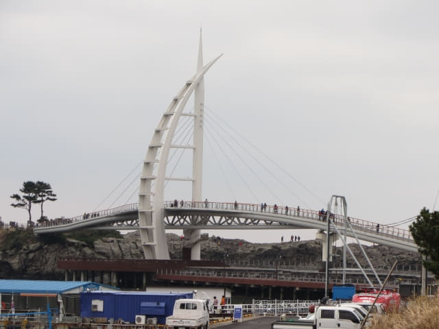
接著沿西歸浦港走。
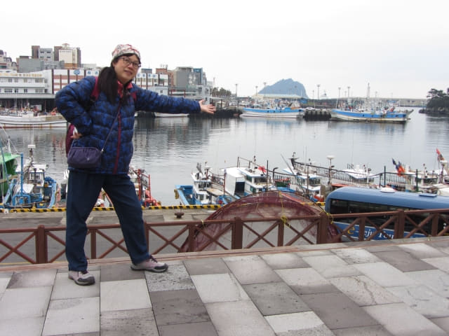
步行十多分鐘便來到新緣橋的橋頭。沿途看到旅遊車的數目, 已經知道這裡的遊客肯定不少, 只是沒料到好像街市那麼擁擠而已。
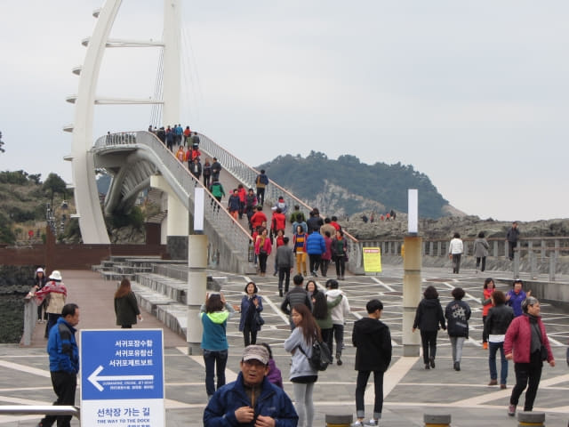
橋頭前的廣場上有一位歌手正在唱歌, 途經的遊人索性隨歌起舞, 我們當然也湊湊熱鬧。難得去旅行, 當然要拋開枷鎖, 盡情享受才不枉此行。
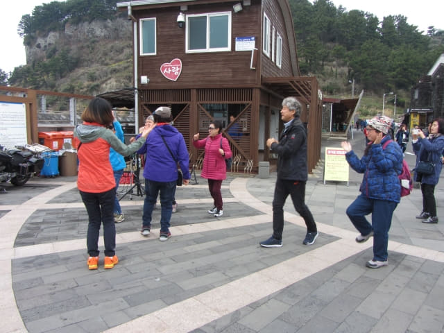
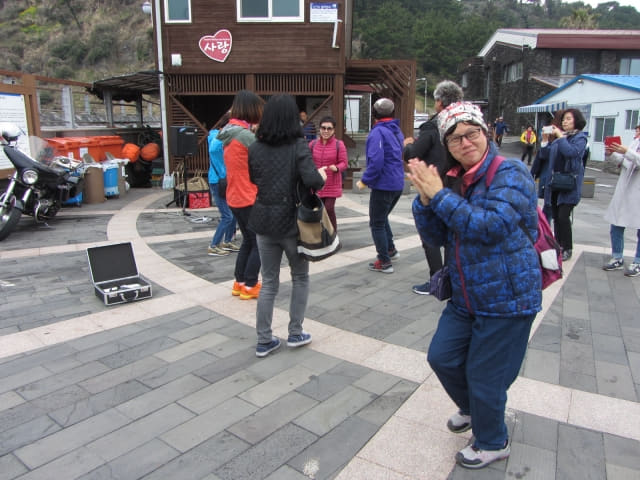
在橋頭前的廣場跳了一會舞, 接著慢慢走上新緣橋。
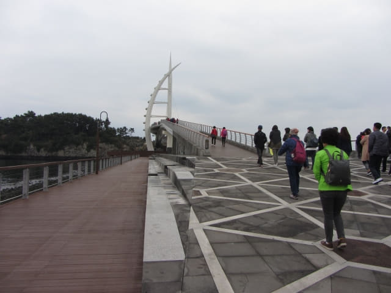
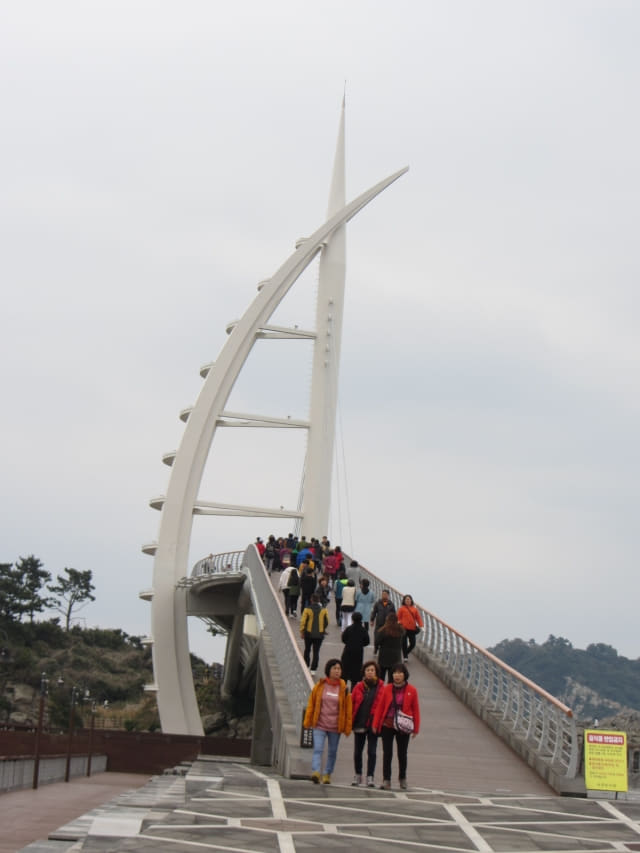
旅客都是一團一團的湧來, 背景難免是人山人海。
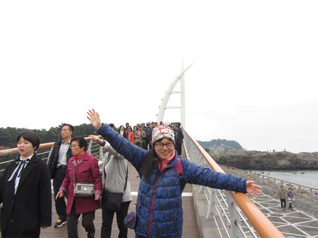
旅客的步伐都十分急速, 好像行軍般, 一瞬間又消失了。
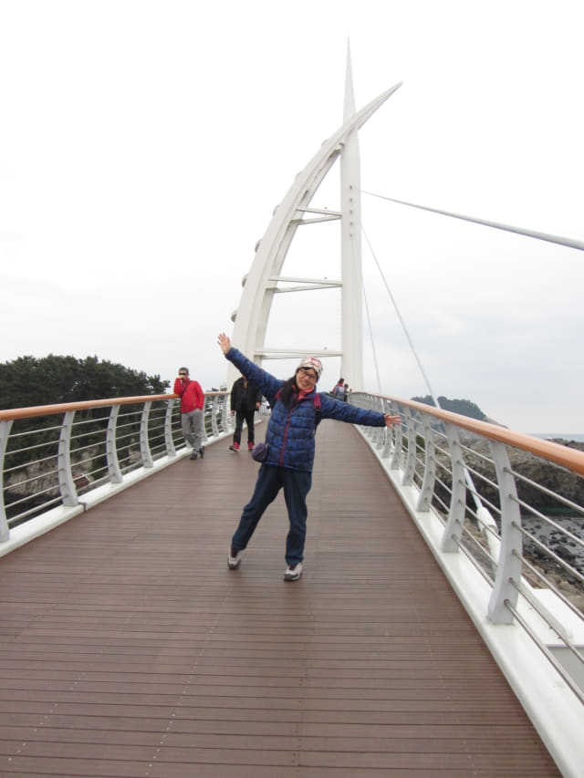
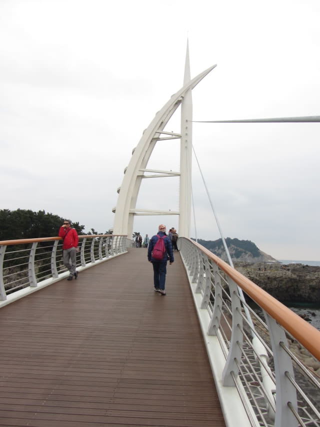
很快便來到新緣橋中間高45米的帆船形主塔。
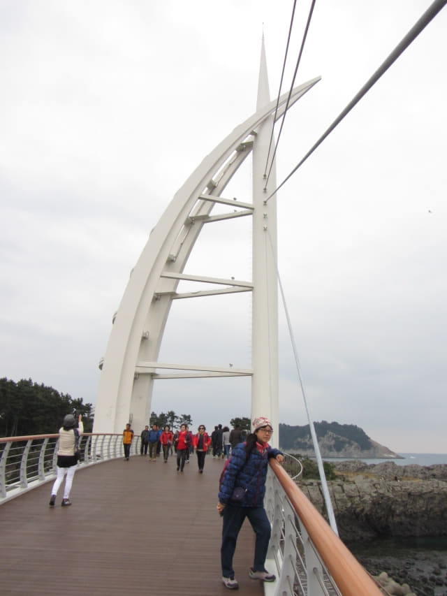
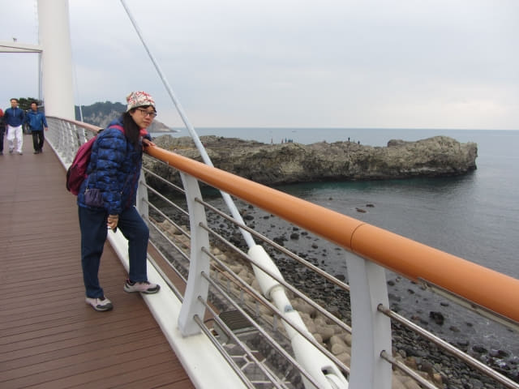
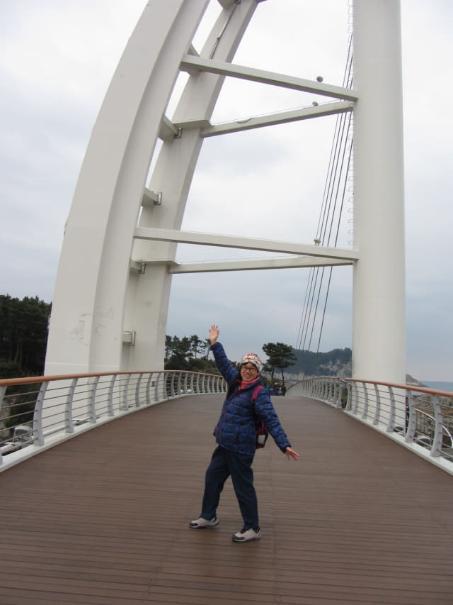
橋中間有一條設計優美的螺旋型樓梯盤旋往下面的海邊。
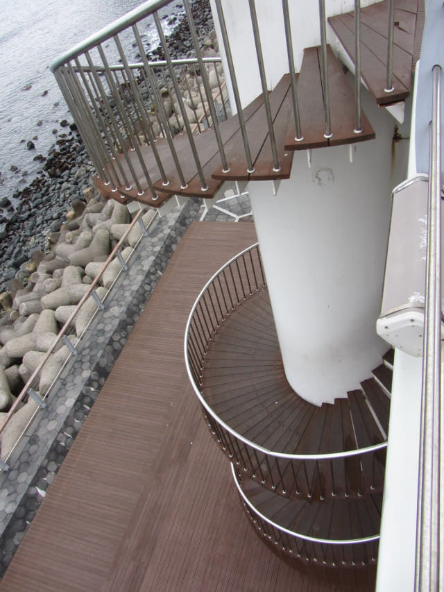
橋的對岸便是鳥島。
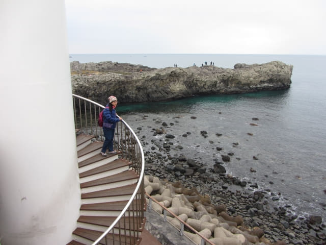
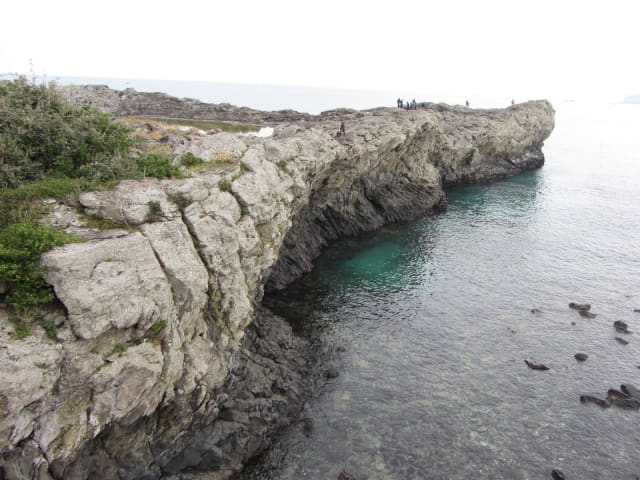
繼續往前走。
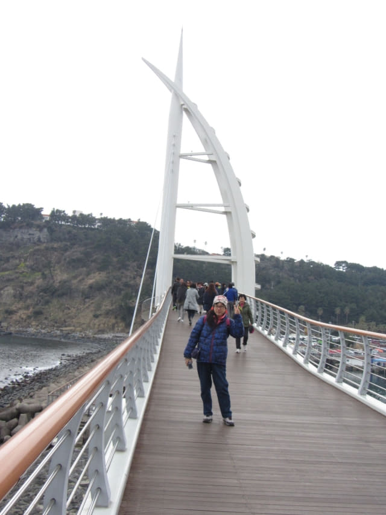
鳥島
走走看看, 不經不覺來到新緣橋對岸的鳥島, 橋頭處是一個面積頗大的休憩場地。
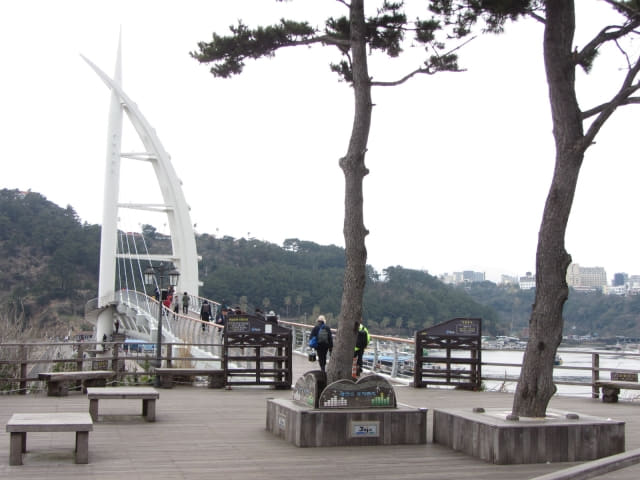
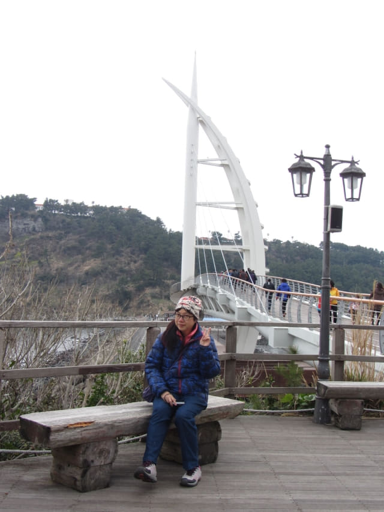